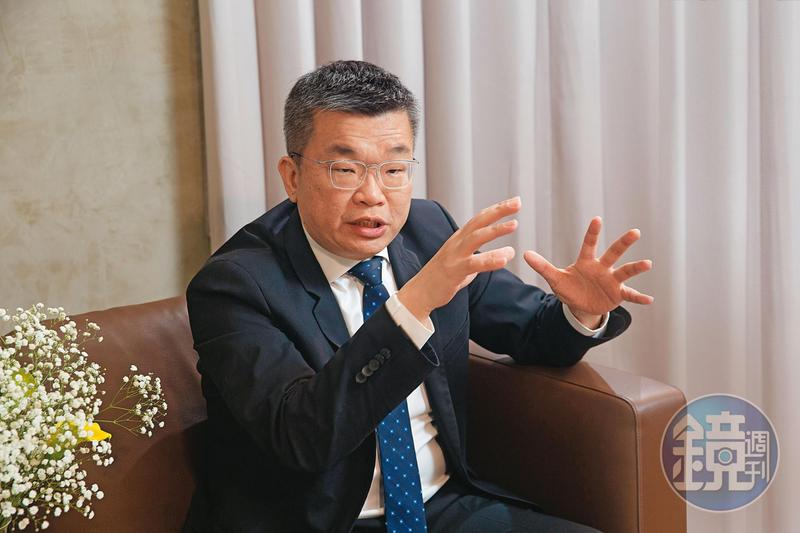
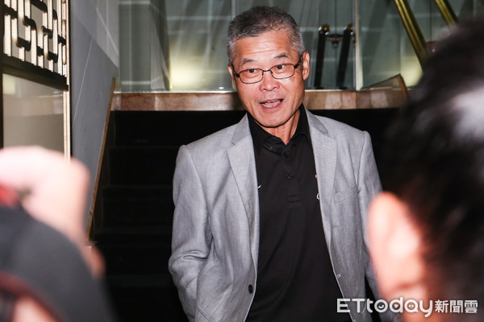
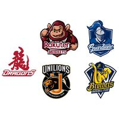

中華職業棒球大聯盟:
- 是於2003年由「中華職棒聯盟」與「台灣大聯盟」兩職業聯盟合併而改制。1989年中華職棒聯盟成立，1990年03月17日中華職棒開幕戰開打，正式宣告台灣進入職棒元年。
- 中華職業棒球大聯盟是以人民團體「社團法人」方式成立，早期亦成立「中華職棒事業股份有限公司」，負責職業棒球雜誌與聯盟商品的販售，董事長皆由各屆會長出任、總經理則為聯盟派任。
- 中華職業棒球大聯盟法人代表（對外之組織負責人）為會長，亦為常務理事會主席，現任會長為立法院副院長蔡其昌先生，組織內部最高行政主管為秘書長，由會長提名經常務理事會同意後聘任，主掌聯盟內部所有事務，現任為知名球評、資深棒球技術委員的楊清瓏先生，另可依規章聘任多位副秘書長協助聯盟推廣業務，現由聯盟賽務部出身的王惠民、蔡其昌會長特助蔡克斯分任，個別分工管理賽務與宣推。

會長:蔡其昌
出身台中縣清水鎮（現台中市清水區），自擔任立法委員起，長期關注棒球運動發展，並於立法院質詢時多次要求行政院增加體育、棒球等項目之預算，更擔任台中市壘球委員會主委，並陸續推動台中市多項場域改建為棒壘球場。曾與支持桃園市在地球隊Lamigo桃猿隊的鄭文燦市長打賭，若台中在地球隊中信兄弟未能奪冠將請球迷吃雞排，後於2020年兌現。

秘書長:楊清瓏
台灣棒球選手、教練，曾擔任緯來體育台球評、綺麗娛樂有限公司的總經理，目前擔任中華職棒秘書長。
目前球隊:
